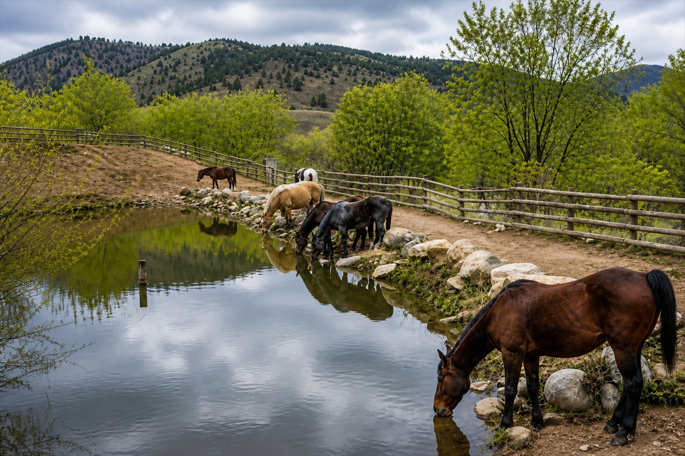
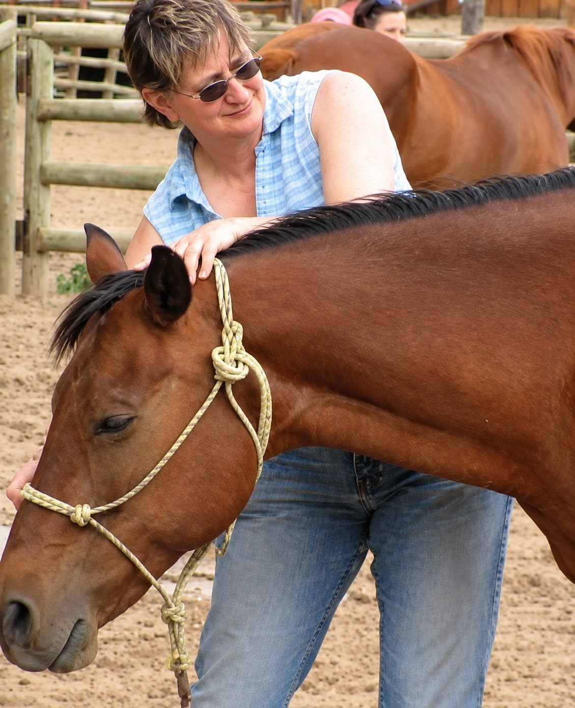
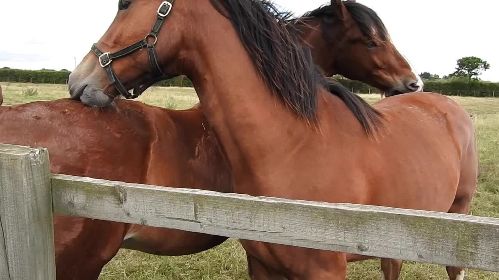
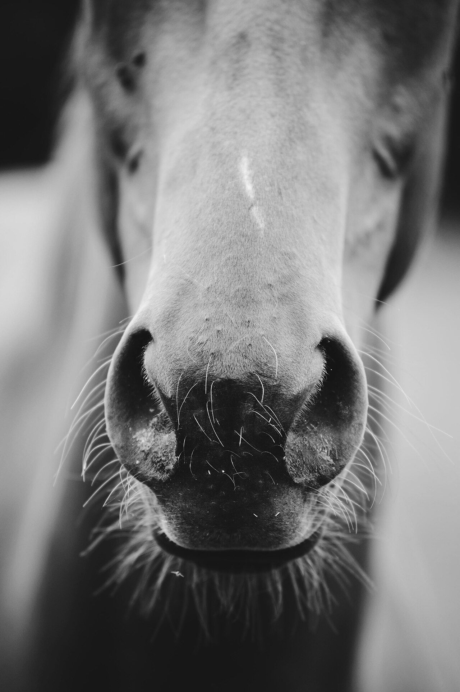
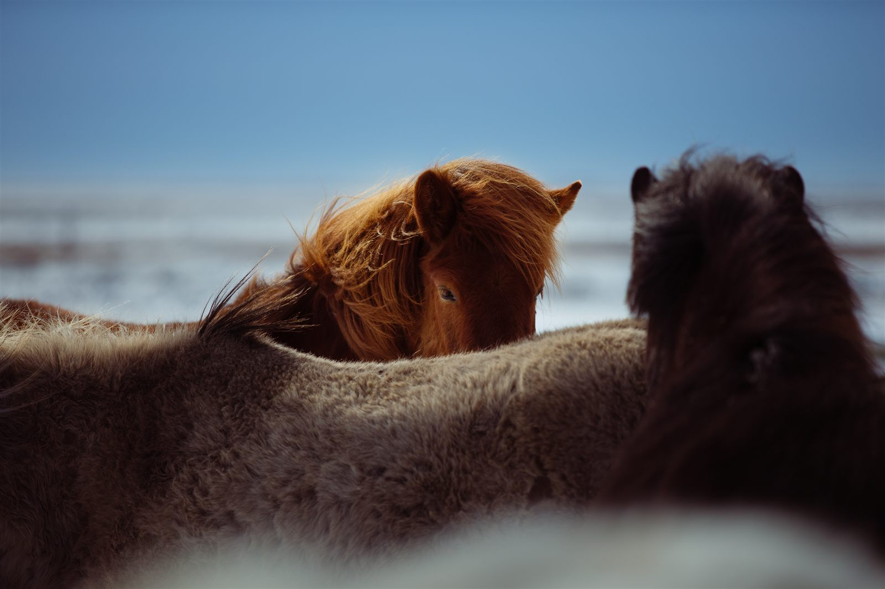
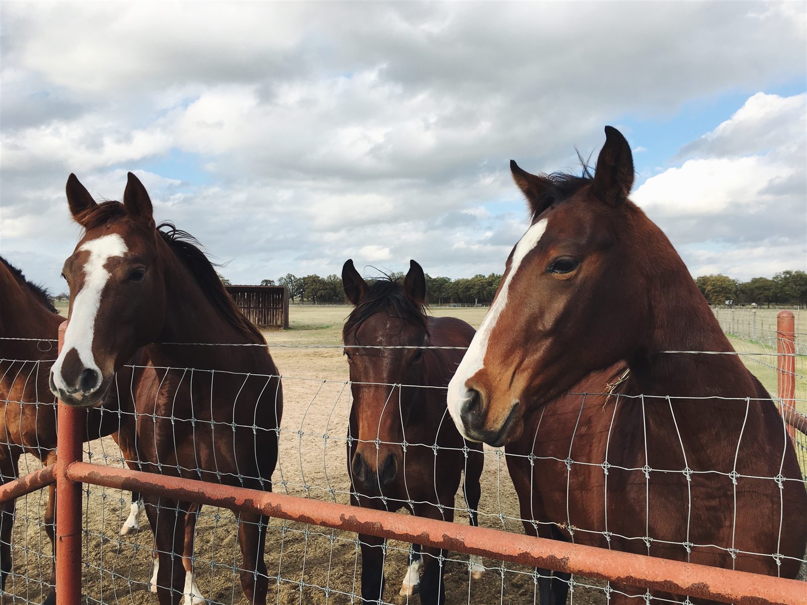
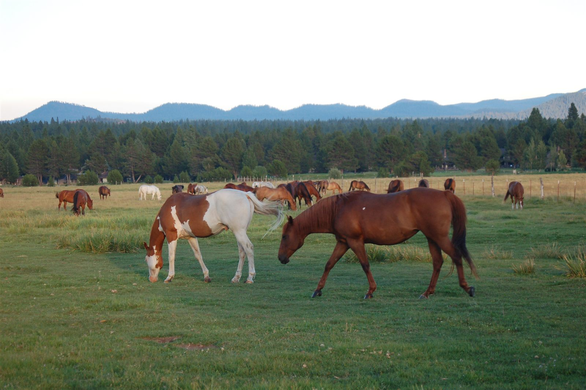
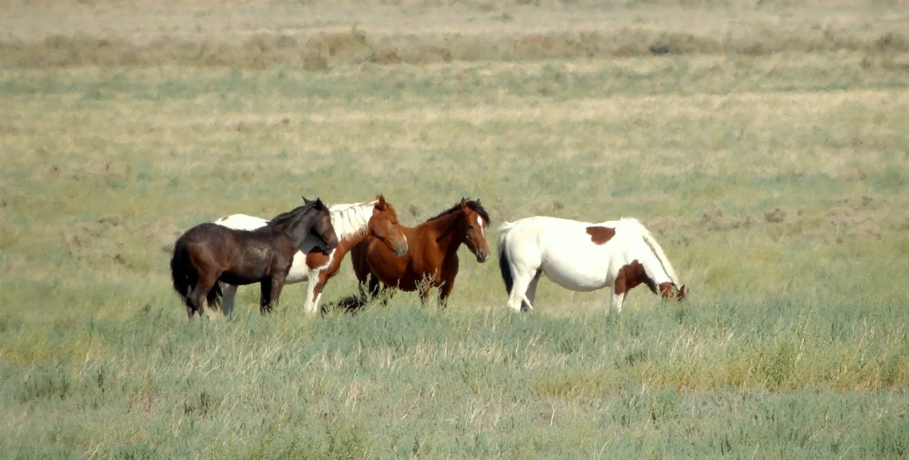
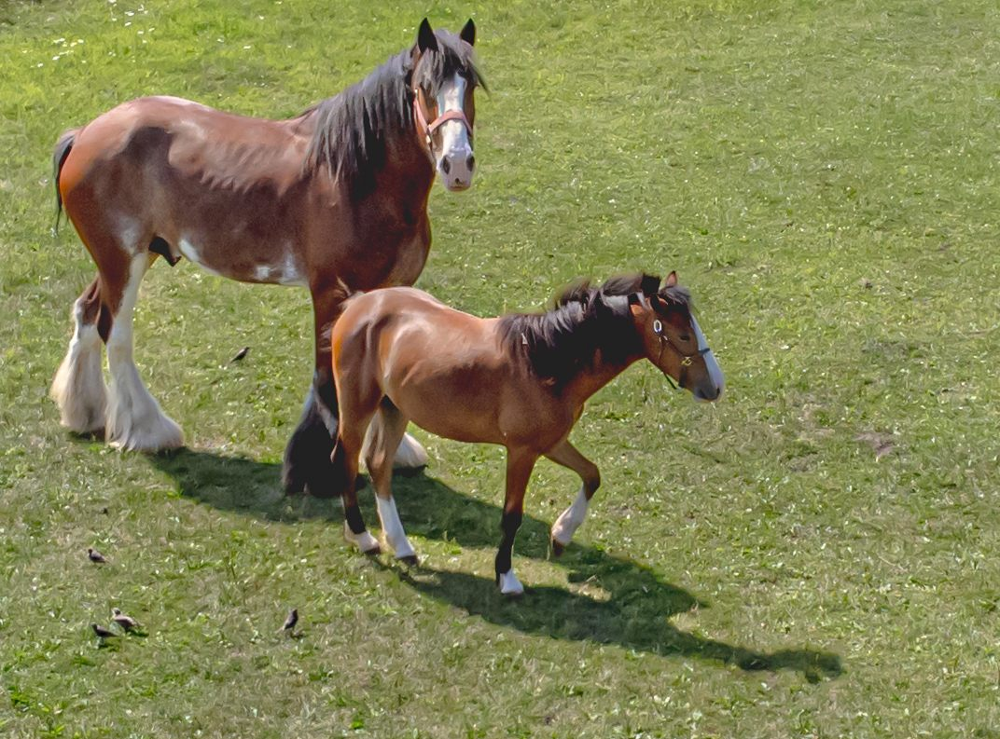
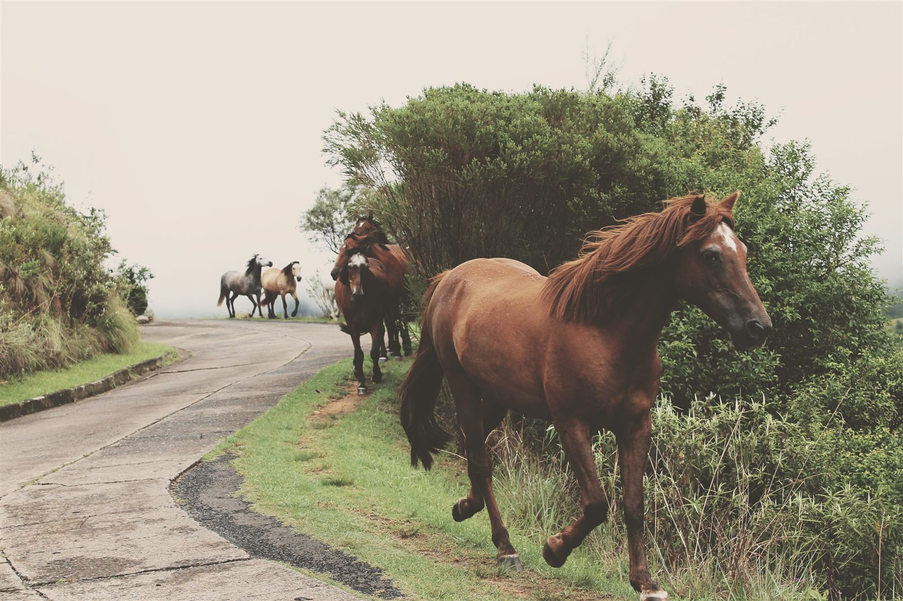

Georgian Triangle, Ontario
Find the quiet that lets you work together.
I’m Liw. Finding Quiet is the name I work under — and what I listen for when I’m with your horse. Bodywork, craniosacral therapy, and workshops for people who want an easier, kinder partnership.
The work
Inner quiet, for horse and rider.
Finding Quiet is about that moment when the fuss drops away — when you and your horse can actually hear each other.
I help your horse find that ease through equine bodywork. I also design and co-facilitate workshops with horses so you can explore your own quiet — even if you don’t have a horse of your own. I use craniosacral therapy (CST) with animals and with people.
This site is about how I work with your horse. If you’re curious about human CST, there’s a dedicated craniosacral website.

Services
How I can help

Equine massage
Hands-on work for the horse you have — trail, dressage, hunters, barrel racing, and everyone in between.
Session details
Craniosacral
Quiet hands-on work for you — in Collingwood, at your place, or a short session at a show.
Human CST
Workshops
A day with horses for a team, a group, or anyone curious about their own quiet — no riding required.
Plan an eventWant me at your barn or Pony Club? Just ask.
From the barn
More from ridersCorky loves your massages and the effects are lasting. He is simply more relaxed… Corky is a remarkable old man and still quite the athlete, and your visits seem to peel back the years.
Every discipline
From trail horses to Grand Prix.
There are many kinds of equine bodywork, and they can help almost any horse — the Grand Prix dressage partner in work every week, and the trail horse you love to hack out on Sunday. Our horses’ bodies, like ours, take on the day’s work and hold onto it.
A regular massage helps your horse shake off the strain of the job. A series of treatments can ease an old injury or a stuck movement pattern. English or Western, it doesn’t matter — if they have a body, they can benefit.
I’ve worked with western trail horses and barrel racers, dressage and hunter/jumper eventers, and even a polo horse or two.



Around the barn
Horses, as they are.



